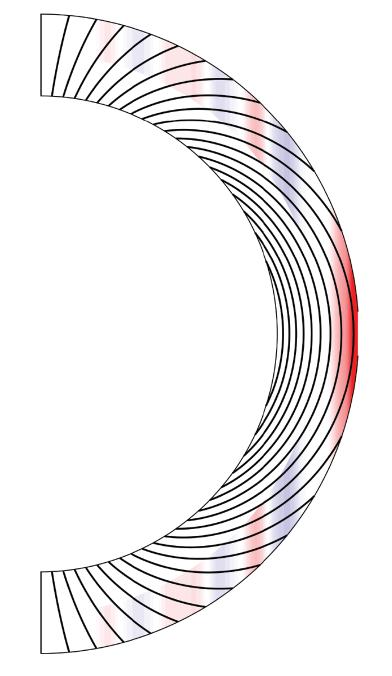

Planetary Interiors
How deep do a planet's winds go? Gravity tells us.
Gravity and magnetic measurements reveal deep winds, electrical structure, and interior dynamics. Spacecraft gravity fields, magnetic constraints, and geophysical modeling help infer how atmospheric jets extend below cloud tops, how conducting fluids move inside giant planets, and what those hidden motions reveal about planetary structure and evolution.
Data from NASA Juno — Hao Cao has been a member of the Juno Science Team since 2014.

Key publications
- Cao, H., Bloxham, J., Park, R.S., et al. · 2023 — Strong resemblance between surface and deep zonal winds inside Jupiter revealed by high-degree gravity moments. The Astrophysical Journal 959, 78.Uses high-degree Juno gravity moments to connect visible winds with deep interior flow.
- Bloxham, J., Moore, K.M., Kulowski, L., Cao, H., et al. · 2022 — Differential Rotation in Jupiter's Interior Revealed by Simultaneous Inversion for the Magnetic Field and Zonal Flux Velocity. JGR: Planets 127, e2021JE007138.Combines magnetic-field inversion and zonal-flow modeling to constrain Jupiter's interior rotation.
- Kulowski, L., Cao, H., Bloxham, J. · 2020 — Contributions to Jupiter's gravity field from dynamics in the dynamo region. JGR: Planets 125, e2019JE006165.Links gravity signals to dynamics in Jupiter's electrically conducting dynamo region.
Background and media
- Giant Planet Interior Dynamics: Recent Progress and Open QuestionsVideo of Hao Cao's January 2025 IPAM talk.
- Juno findings: Jupiter's jet-streams are unearthlyNASA summary of the gravity results behind the deep-wind work.
- NASA Juno mission overview